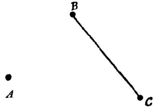

图15
如果我们把图14和图15叠起来，问题的解答可能突然闪现出来。这里有两
个直角三角形，彼此全等，还有一个十分重要的新交点。
14．你能重新叙述这个问题吗?
你能重新叙述这个问题吗?你能否重述得更不同些?提出这些问题的目的
是找出合适的“变型的问题。”回到定义去。参见“定义”一节。
15．分解与重新组合
分解和重新组合是重要的智力活动。
研究一个引起你兴趣或者挑起你好奇心的对象：如，一间你打算租用的房
子，一封重要而又神秘的电报，或者任何一个来龙去脉及其目的部使你困惑不
解的事物，或者任何一个你打算解决的问题均可做为研究的对象。你对于这个
对象有一个整体的印象，但这印象很可能还不够明确。你想起了一个细节，你
便集中注意力于它。然后，你又注意到另一个细节；以后又注意到其他一个。
细节的各种组合都可能呈现出来，过了一会儿，你又把对象当作整体来加以考
虑了，但现在你是从不同的角度来看它了。你把整体分解成许多部分，然后你
又把各个部分重新组合成或多或少有些不同的整体。
(1) 如果你钻到细节中去，你可能会在细节中迷途。过多或过细的具体情节
是脑力的一种负担。它们如一叶障目会阻碍你充分注意主要之点，甚至使你完
全看不到主要之点，只见树木而不见森林。
我们当然不希望为不必要的细节去浪费我们的时间，我们应该把我们的精
力用到主要内容上。困难就在于我们事先说不出哪些细节最后会变成主要的，
而哪些又不会。
因此，我们首先应当把问题作为一个整体来了解。在弄清了问题之后，我
们将处于较有利的地位来判断哪些具体细节可能是最主要的内容。在研究过一
两个主要之点以后，我们将会处于更有利的地位来判断还有哪些细节可能值得
较细致的研究。让我们进入细节并将问题逐步地加以分解，但不要超过我们所
需要的程度。
当然，教师不能期望所有的学生都在这方面干得很出色。正相反，有的学
生有一种非常愚蠢、非常坏的习惯，他们在把问题当作整体来了解之前就贸然
从细节开始工作。
(2)我们将考虑教学问题，“求解题”。